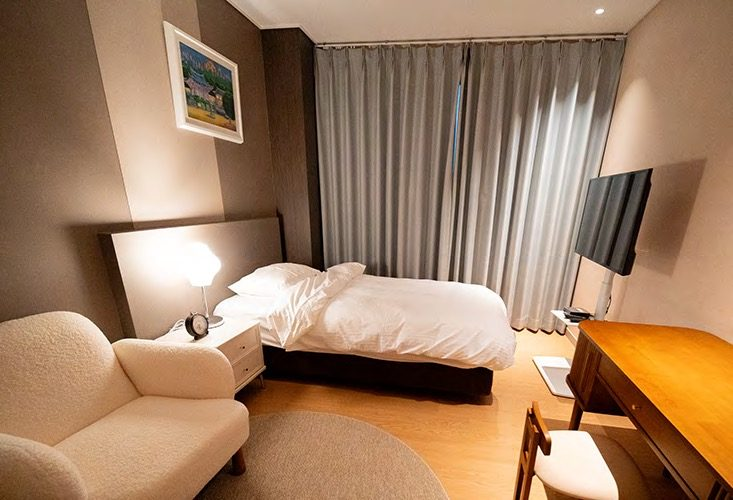
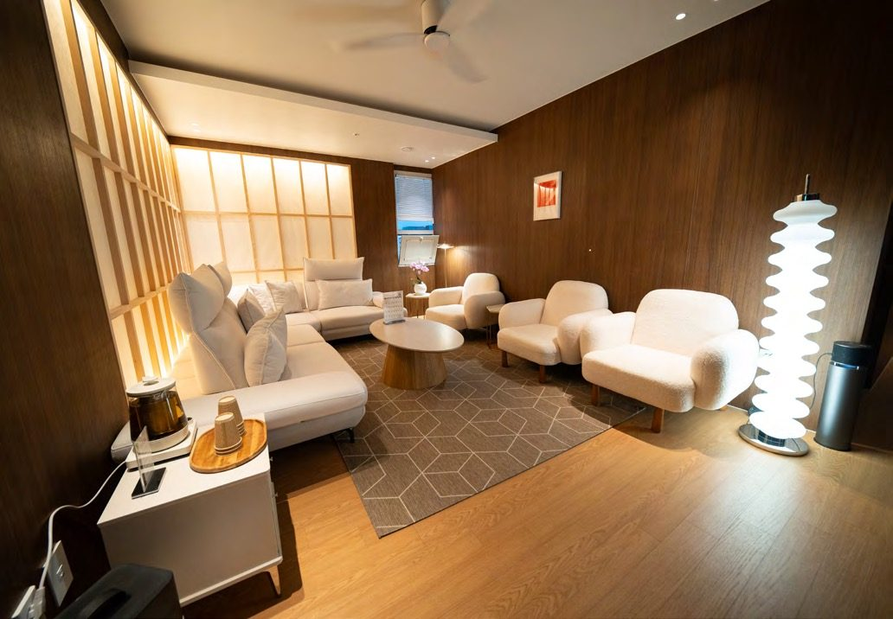
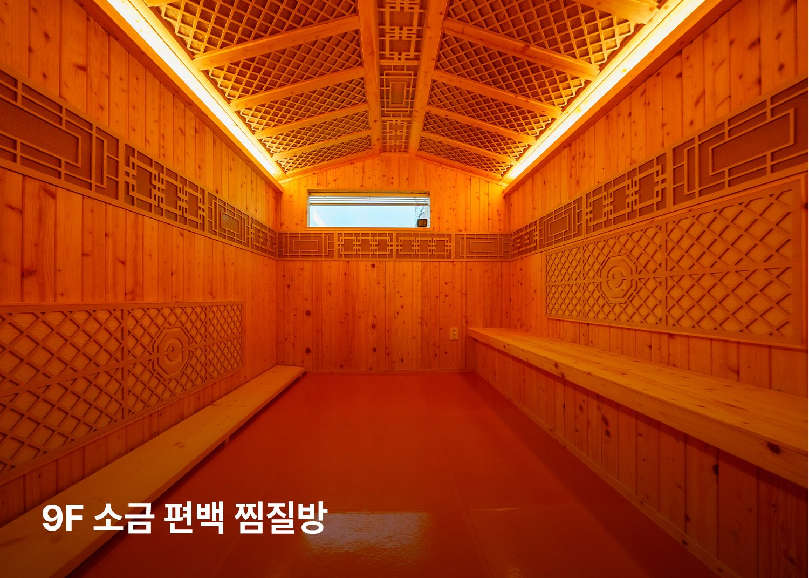
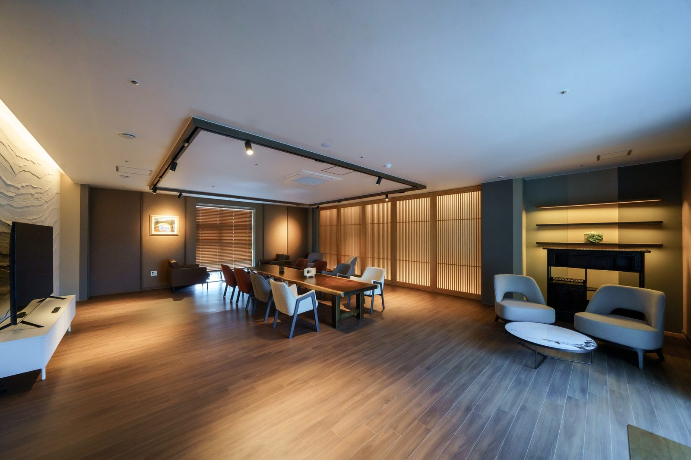

단기입원·외래 회복치료 안내
하일렌요양병원의 단기입원은 1박 2일부터 치료 일정에 맞춰 이용할 수 있습니다. 입원하지 않아도 외래로 통원하며 고주파온열암치료, 고압산소치료, 도수치료, 림프 관리, 고용량 비타민C, 면역 주사제, 영양공급수액을 받을 수 있습니다. 항암 주기 사이와 치료가 끝난 뒤에도 회복을 이어가는 길입니다.

- 단기입원
- 1박 2일부터, 주중과 주말 모두 가능
- 외래 회복치료
- 고주파온열암치료 · 고압산소치료 · 도수치료 · 림프 관리 · 고용량 비타민C · 면역 주사제 · 영양공급수액
- 외래 운영시간
- [디렉터 확인] 외래 운영시간(요일·시간)
- 상담
- 원내 상담실 · 카카오톡 채널 · 062-439-1000
단기입원은 1박 2일부터입니다
일상과 회복을 함께 지키는 단기입원입니다. 주중과 주말 모두 1박 2일부터 단기 일정으로 입원할 수 있습니다. 일상 및 직장생활과 병행이 어려운 분들을 위한 단기입원 관리가 가능합니다.

단기입원 중에는 고주파온열암치료, 고압산소치료, 면역 주사제, 통증치료, 도수치료, 림프 관리를 받을 수 있습니다. 저녁 캘리그라피, 주말영화, 라인댄스로 한 주의 회복 일정을 만들어 드립니다. 프로그램 요일과 시간은 프로그램 안내에서 확인해 주세요.
주말에 일하시는 분들을 위한 주중 단기입원도 1박 2일부터 준비되어 있습니다.
일상을 지키면서 회복하는 방법은 원내 상담실과 함께 정합니다. 단기입원 예약접수를 받습니다.
입원 서류는 소견서 또는 진료기록지 중 하나, 신분증, 피검사 결과지입니다. 소견서 작성이 어려우면 현재까지의 진료 기록이 담긴 진료기록지만 발급받아도 됩니다. 병실과 식사 안내는 입원 안내에 있습니다.
외래 회복치료 7종
입원이 끝나도 회복은 끝나지 않습니다. 외래로 이어지는 회복 흐름을 하일렌요양병원이 함께 관리합니다. 입원하지 않아도 외래로 통원하며 아래 치료를 받을 수 있습니다.
- 고주파온열암치료
- 고압산소치료
- 도수치료
- 림프 관리
- 고용량 비타민C
- 면역 주사제
- 영양공급수액
도수·림프·통증·고주파 치료는 입원 환자분과 동일한 시설에서 받으실 수 있습니다.
[디렉터 확인] 외래 통원 「주 1~3회」가 원내 사실인지 · [디렉터 확인] 전신온열치료를 외래 목록에 넣을지(확정 7종 밖) · [디렉터 확인] 고압산소치료 표기 확정 기록
퇴원 뒤에도 이어집니다
하일렌요양병원의 회복 설계는 퇴원으로 끝나지 않습니다. 퇴원하실 때 앞으로의 계획을 원내 상담실과 함께 정리하고, 집으로 돌아가신 뒤에는 카카오톡 채널로 '퇴원 후 면역관리 가이드'를 보내드립니다. 일상에서 면역을 지키는 습관과 컨디션이 흔들릴 때 확인할 점을 담았습니다. 몸이 힘든 날에는 외래나 1박 2일부터 가능한 단기입원으로 언제든 다시 관리받으실 수 있습니다. 입원부터 퇴원 후 일상까지, 회복의 흐름을 하일렌요양병원이 계속 함께 살핍니다.
이런 분께 외래 통원을 권합니다
퇴원 이후가 진짜 시작입니다. 수술과 항암 뒤에도 몸은 회복 중이고, 재발과 전이에 대한 불안은 자연스러운 감정입니다. 정기 통원으로 몸 상태를 점검합니다. 다음 네 경우에 외래 통원을 권합니다.
- 림프부종이나 통증이 남아 있는 분
- 입원 중 받던 관리를 이어가고 싶은 분
- 다음 항암까지의 공백 기간을 관리하고 싶은 분
- 직장에 다니는 분. 퇴근 후 저녁 시간대로 일정을 잡을 수 있습니다.
외래센터 블룸
힘든 치료를 지나 일상으로 돌아가는 길목의 공간입니다. 수술·항암·방사선의 시간을 지나 일상으로 돌아가는 그 길목에 9층 외래센터 블룸이 있습니다. 리클라이너 주사실, 세라젬 의료기기, 소금편백찜질방, 발마사지기 등 휴식과 치료를 함께 누리실 수 있는 공간입니다. 도수·림프·통증·고주파 치료는 입원 환자분과 동일한 시설에서 받으실 수 있고, 차도 준비되어 있습니다.


[디렉터 확인] 공용샤워실 운영 여부
외래 관리는 이렇게 진행됩니다
- 첫 방문 상담. 카카오톡 채널 또는 전화로 문의해 주시면 원내 상담실이 첫 방문 일정을 안내합니다. 첫 방문 때 원장 진료 상담을 받습니다.
- 검사. 혈액검사 등으로 지금 몸 상태를 확인합니다.
- 일정. 오전과 오후 가운데 오시는 시간을 정합니다. 일정이 바뀌면 미리 연락해 주세요.
[디렉터 확인] 외래 첫 방문에도 흉부 엑스레이 촬영을 하는지, 당일 결과 확인 문장을 외래에 쓸지(B-7-1 「원내 검사」는 입원 중 표기) · [디렉터 확인] 일정을 조정하는 창구를 「외래 담당 간호사」로 둘지 「원내 상담실」로 쓸지
치료병원 외래 일정은 그대로입니다
입원 중에도 수술·항암을 받는 치료병원의 외래 일정은 그대로 이어가며, 그 진료에 필요한 진료의뢰서는 원내 주치의가 작성합니다. 외래 일정 조정은 원내 상담실에서 안내합니다.
잠깐 쉬어가셔도 괜찮습니다
잠깐 쉬어가셔도 괜찮습니다. 끊기지 않는 것이 중요하고, 한 달에 한 번이라도 괜찮습니다. 진료만 보러 오셔도 됩니다. 궁금한 점이 있으시면 언제든 원내 상담실에 물어보세요.

야간과 응급 상황
입원 중에는 의료진이 24시간 상주하고 당직 체계로 확인·처방합니다. 증상은 병동에서 주치의에게 바로 전달되어 당일 처방으로 대응합니다.
하일렌요양병원에는 자체 응급실이 없습니다. 응급 상황은 발견, 초기 안정화, 상급 치료병원으로 신속 전원의 순서로 대응합니다. 외래로 통원하는 분이 밤에 증상이 생기면 치료병원이 안내한 기준에 따라 응급실 방문 여부를 판단해 주세요. [디렉터 확인] 외래 환자 야간 증상 안내를 병원이 실제로 이렇게 하는지(원자료에 없는 문장)
자주 묻는 질문
단기입원은 며칠부터 가능한가요?
하일렌요양병원의 단기입원은 1박 2일부터 치료 일정에 맞춰 이용할 수 있습니다. 주중과 주말 모두 가능하며, 일상 및 직장생활과 병행이 어려운 분들을 위한 단기입원 관리가 가능합니다.
입원하지 않고 외래로만 다녀도 되나요?
입원하지 않아도 외래로 통원하며 고주파온열암치료, 고압산소치료, 도수치료, 림프 관리, 고용량 비타민C, 면역 주사제, 영양공급수액을 받을 수 있습니다. 진료만 보러 오셔도 됩니다.
수술이나 항암을 받는 치료병원의 외래는 계속 다닐 수 있나요?
입원 중에도 수술·항암을 받는 치료병원의 외래 일정은 그대로 이어가며, 그 진료에 필요한 진료의뢰서는 원내 주치의가 작성합니다.
단기입원 때 어떤 서류를 준비하나요?
소견서 또는 진료기록지 중 하나, 신분증, 피검사 결과지를 준비합니다. 소견서 작성이 어려우면 현재까지의 진료 기록이 담긴 진료기록지만 발급받아도 됩니다.
입원 중 밤에 아프면 누가 봐주나요?
의료진이 24시간 상주하고 당직 체계로 확인·처방합니다. 하일렌요양병원에는 자체 응급실이 없으며, 응급 상황은 발견, 초기 안정화, 상급 치료병원으로 신속 전원의 순서로 대응합니다.
외래·단기입원 상담은 원내 상담실에서 안내합니다. 카카오톡 채널 또는 전화로 문의해 주시면 원내 상담실이 일정을 안내합니다.
제공 하일렌요양병원 · 검토 [디렉터 확인] 검토 의료진 · 검토일 [디렉터 확인] 검토일 · 출처 하일렌 발행정본 확정 표기(2026-08-20 병원 검수), 하일렌 소식지 2026 여름호·가을호, 퇴원 후 면역관리 가이드 · 갱신 2026-10-05